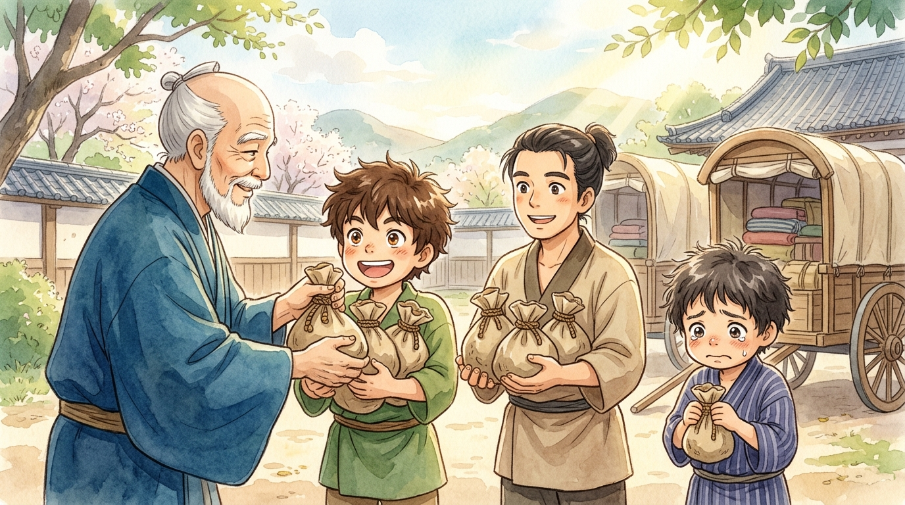
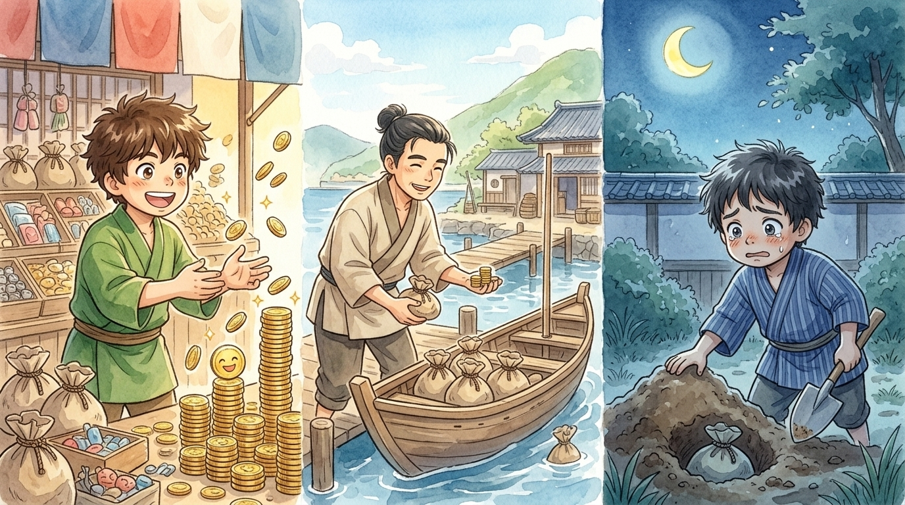
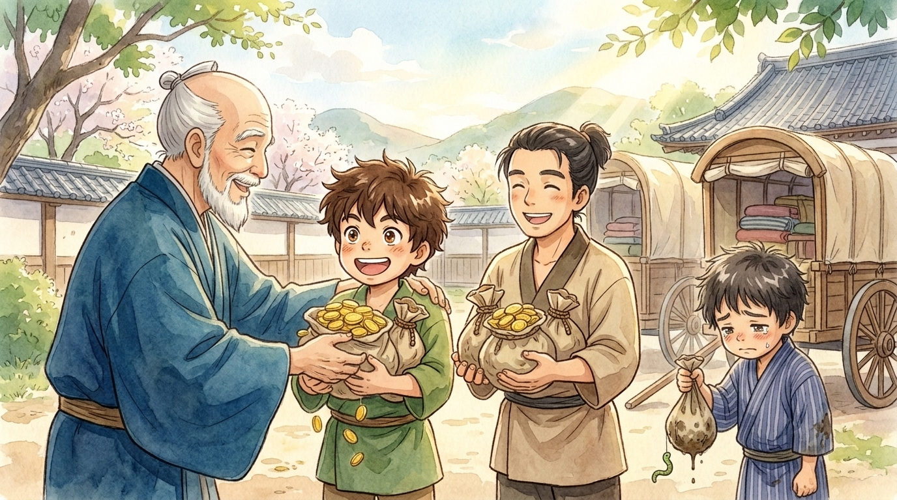

Good morning, students, parents, and honored guests, and welcome to the strangest prize-day assembly you will ever attend! Today's ceremony comes from a story Jesus told in his very last week of teaching — a story about a master, three servants, and what we do with what we're given.1 The trophies are polished, the certificates are printed. But I warn you now: the prizes in THIS assembly do not go where prizes usually go. Please hold your applause until the twist.
🎓 The handing-out ceremony
Our story opens not with a prize-giving but a GIVING-giving. A wealthy master, about to travel far away for a long time, called in his three servants and entrusted his fortune to them. And listen carefully to the amounts, because every word matters: to one he gave five talents, to another two, and to another one — each according to his ability.
Now, a "talent" here isn't a knack for piano — it was money, and not pocket money: ONE talent was roughly twenty years of wages. Twenty years! So even Servant Three, our one-bag man, was handed a staggering treasure.2 Notice too: the master didn't give them all the same. He knew his servants — their different strengths, their different readiness — and he trusted each with a fortune fitted to him. Different amounts; identical trust. Then off he went, and the doors of possibility swung wide open.

🎓 What the three did
Servant One went out at once — the Bible loves that little phrase — and put his five talents to work: trading, building, sowing, risking, sweating. Servant Two did exactly the same with his two. Were they nervous? Surely! Money can be lost; ventures can fail; working hard in public means failing in public sometimes. They worked anyway.
And Servant Three? He looked at his one bag of gold — twenty years of wages, remember, a trust most people never receive — and he was afraid. Afraid of losing it. Afraid of the master. Afraid of getting it wrong. So he did the one thing guaranteed not to fail… and guaranteed not to anything: he dug a hole in the ground and buried it.3 Then he patted down the earth, memorized the spot, and went back to his ordinary days, telling himself he was being careful.
"It's safe. Nothing can go wrong. When the master returns I'll hand back exactly what he gave me — not a coin missing. Nobody can blame a man who lost nothing… can they?"
🎓 Prize day
After a long time — years, perhaps — the master came home, and called the assembly to settle accounts. Ahem! Trumpets, please. Servant One stepped up: "Master, you entrusted me with five talents. See — I have gained five more." Ten bags on the table! And the master's reply is the trophy every heart in that room was made to long for:
Servant Two stepped up: "Master, you entrusted me with two talents; see, I have gained two more." Four bags! And now — students, this is the FIRST twist, so listen — the master said exactly the same words. Word for word. "Well done, good and faithful servant… come and share your master's happiness!" The five-bag man and the two-bag man received the identical prize. The master never compared their totals — he measured their faithfulness with what each had been given. In this assembly, the two-talent servant stands just as tall as the five.4

🎓 The muddy bag
Then came Servant Three, carrying one bag with dirt still on it. And his speech — oh dear, students — was not an apology but an accusation: "Master, I knew you were a hard man… so I was afraid, and hid your talent in the ground. See — here is what belongs to you." As if to say: be glad I lost nothing; really this is your fault for being scary.
The master's reply was sorrowful and sharp. "You wicked, lazy servant! You knew my business, did you? Then at the very least you could have put my money with the bankers to earn interest!" The one talent was taken from him and given to the ten-talent servant, and the fearful servant lost his place in the master's household and his share in the joy. A hard ending — Jesus meant it to sting a little, the way true warnings do.5 For notice what the third servant was NOT punished for. Losing money? He lost none. Being given less? The master himself gave the amounts. He was condemned for one thing only: he was given a treasure and did nothing at all.

🎓 The headmaster's closing remarks
So, dear assembly, what is this strange prize day teaching? God is the generous Master, and every one of us stands in that opening scene. Your quick mind, your kind heart, your knack for music or maths or making lonely kids laugh, your health, your time, your chance to learn — these are your "talents," entrusted each according to ability, every one of them worth more than bags of gold. (Here is a wonderful secret: the English word "talent," meaning your abilities, comes from THIS very parable. Check the footnotes!)
The Master is not comparing your bags with anyone else's — He gave out the bags Himself, remember. He asks only this: what did you do with yours? And the great enemy in this story isn't robbery or bad luck. It's fear — the whisper that says better to bury it than to try and fail. The two faithful servants weren't fearless; they worked scared. That's what faithful looks like.
Assembly dismissed — but take this with you out the door. Somewhere in your life there's a bag with your name on it and maybe a little dirt on the shovel nearby. Dig it UP. Try the instrument, join the team, help the friend, raise your hand. Not to beat anyone — the two-bag servant got the same trophy as the five! — but because the Giver is coming back, and the words He longs to say to you, more than anything, are: "Well done, good and faithful servant. Come and share your Master's happiness." 🎓